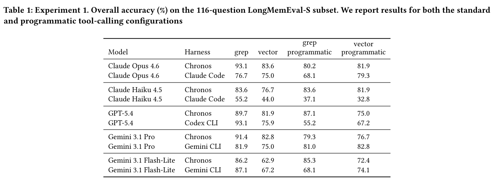
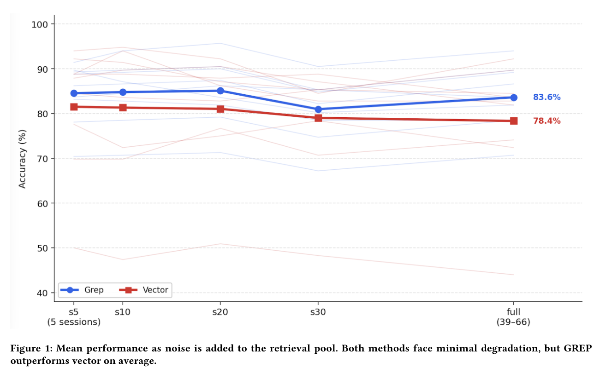
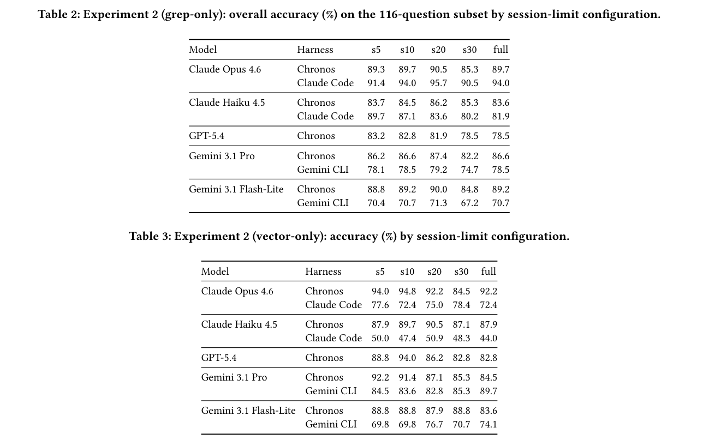

一句话读懂这篇论文
论文不是只比较 grep 和向量库
作者做的是一个三因素端到端实验：同一份语料，仅改变检索机制、Agent 外壳和结果交付方式，观察最终 QA 准确率。
搜什么
grep 精确匹配原始文本；vector 通过 embedding、ANN 和 reranking 找语义近邻。怎么搜
自研 Chronos 或 Provider CLI 决定提示词、工具协议、迭代和错误恢复。结果怎么读
inline 直接进入上下文；programmatic 写入文件，再由 Agent 主动读取。grep 与 vector 在奖励两种不同能力
Agent 必须猜中区分度足够的字符串或正则。一旦命中，日期、数字、偏好、专名等 literal witness 很干净；词汇不匹配时则直接漏召回。
能找回改写、间接提及和概念近邻，但短查询容易带入 topical false friends；embedding、索引和 reranker 也增加了系统变量。
Harness 不是透明管道
Chronos 使用 LangChain、自适应问题类别的动态提示词、四个搜索工具，并在循环前注入 top-15 vector 结果。Claude Code、Codex 和 Gemini CLI 则继承各自的 shell 工具接口、上下文组织、stdout 分块和停止策略。
同一个 Claude Opus 4.6、同一个 inline grep，在 Chronos 中达到 93.1%，在 Claude Code 中是 76.7%。16.4 个百分点不是 retriever 带来的，而是 Harness 改变了查询生成与证据消费过程。
Inline 与文件交付交换了两种稀缺资源
工具输出立即追加到 transcript，模型读取最直接，但大结果会与系统提示、历史对话和旧工具结果争夺窗口。
结果写入文件可延迟暴露、局部读取，却要求 Agent 完成 locate → open/grep → integrate → retry，多一步就多一个失败点。
实验到底控制了什么
一个需要留意的实验条件
语料并非纯原始对话：Chronos 预处理会把日期、区间等时间信息抽成结构化事件。自研 Harness 还会在搜索循环前注入 top-15 vector 上下文，所以“grep-only”并不等同于系统从头到尾完全没有 dense signal。
主结果：Inline 下 grep 稳胜，文件模式下排序重洗

| 关键切片 | Grep | Vector | 差值 |
|---|---|---|---|
| Chronos / Gemini Flash-Lite / inline | 86.2 | 62.9 | +23.3 |
| Claude Code / Opus / inline | 76.7 | 75.0 | +1.7 |
| Codex / GPT-5.4 / programmatic | 55.2 | 67.2 | -12.0 |
| Gemini CLI / Pro / programmatic | 81.0 | 82.8 | -1.8 |
Programmatic vector 在 10 个组合中的 5 个超过 programmatic grep。这里最重要的不是“vector 扳回一局”，而是检索结果一旦从 inline 消息变成文件任务，系统测量对象就从排序质量变成了排序质量加工具执行可靠性。
噪声增加没有产生一条统一的退化规律


Claude Code + Opus/Haiku 在所有已报告档位都偏向 grep；Gemini CLI + Gemini Pro 则始终偏向 vector；Chronos 内部还会随 session 数发生反转。这说明“规模增大后 vector 必然接管”并不是本文数据支持的结论。
这篇论文最值得带走的三件事
只报告 BM25/ANN 的 Recall@k 会低估 Agent 提示、工具 schema、输出格式和迭代策略造成的差异。
日期、ID、错误码、用户名和明确偏好适合 grep/BM25；概念性、改写性问题再调用 dense retrieval。
文件化结果上线前要测 locate/read/integrate/retry 的闭环成功率，不能只测写盘成功和 token 节省。
局限、混杂变量与尚未回答的问题
论文结论部分用了较强的“grep consistently yields higher accuracy”表述，但正文明确展示了多个 vector 胜出的 Harness/交付组合。更严谨的结论应是：在本文 full-haystack 主实验的 inline 条件下，grep 一致更高；其他条件是交互依赖的。
一个更稳妥的 Agentic Search 落地配方
先识别证据类型
实体、日期、编号走 lexical；改写、主题与综合问题走 vector；不确定则并行。保留双路候选
用 RRF 或 reranker 融合，记录每条证据来自哪条检索路径。端到端分层测量
同时记录检索命中、工具闭环、上下文占用、最终正确率和按 Harness 的回归。上线时建议监控
至少记录 query rewrite 次数、grep 零命中率、vector 候选相似度、文件读取成功率、平均工具轮数、证据被引用比例和最终答案准确率。这样当换模型或换 CLI Harness 时，才能知道退化发生在“没搜到”“没读到”还是“读到但没用对”。